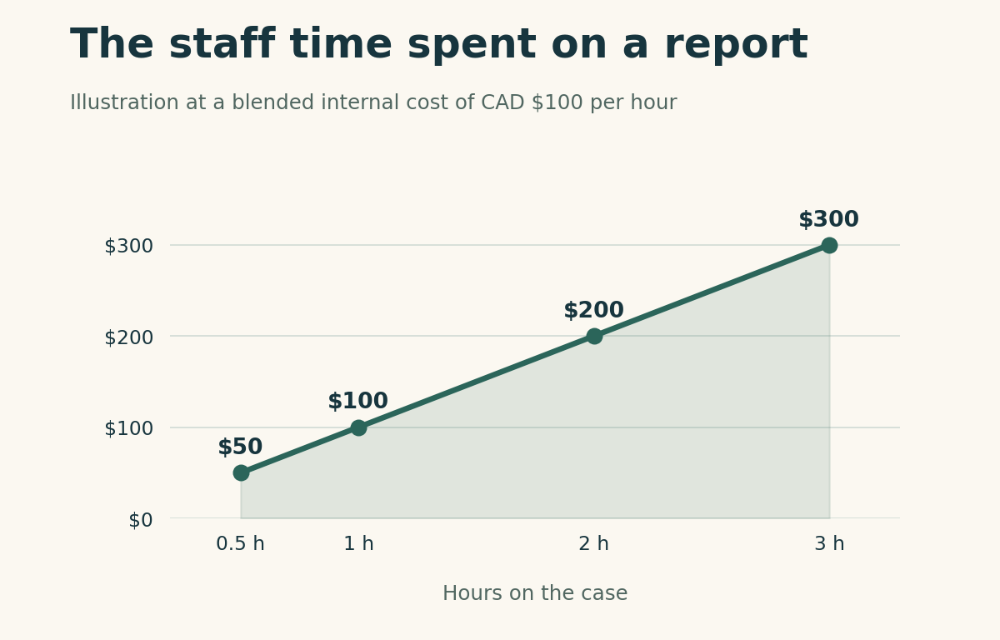

Published by ReviewRemoval. Authorship, sources and correction standards.
On this page
A prospective client can read your Google profile before calling about a sensitive matter. A review naming the wrong firm or describing an unrelated matter can raise questions before intake. ReviewRemoval can assess the public facts for a policy concern. Start by agreeing internally on what the firm can share.
Request a free law firm review assessment
Choose who reviews the public post
Have an intake lead take down the public link, date and wording. A lawyer or designated manager can check whether the review names a practitioner at a different firm, an office you don’t operate, or something that actually involved your team. An opposing party or an initial caller may be describing an interaction even if there is no client file under their display name. Focus on verifiable facts and the applicable platform policy. Google’s rules for contributed content.
Keep client files and the public response separate
The Law Society of Ontario’s confidentiality rule and commentary explain the limits on sharing information learned through a professional relationship, including why it can be sensitive to confirm who sought advice. Have the firm review any proposed response or report that touches on confidential information. A review can be assessed using its public wording and publicly verifiable facts. Law Society of Ontario rules, section 3.3.
A post about a real call or invoice may be better handled through the firm’s private complaints channel. If the wording raises a genuine policy concern, save it without copying client files, matter numbers or identifying details into an assessment form.
Compare internal time with the scope of paid help
Include time for preserving evidence, checking what can be shared, writing the report and following the status. In the scenario below, two staff hours cost CAD $200 at a blended CAD $100 per hour. Use your own internal cost and retain time for the review and approval your firm would still need to do.

View chart data
| Internal time | Estimated cost |
|---|---|
| 30 minutes | CAD $50 |
| 1 hour | CAD $100 |
| 2 hours | CAD $200 |
| 3 hours | CAD $300 |
Compare the written quote with the admin time and follow-up you want handled. If the firm has already filed a report, identify the time still needed to follow the case or prepare an eligible appeal.
Share the public details first
We can check the review for a potential policy issue before you commit to paid work. If you approve the scope, ReviewRemoval can organize suitable evidence, prepare a report and handle agreed follow-up, including an eligible appeal. See what to prepare for a Google review appeal · Google’s official reporting process.
For approved work, ReviewRemoval charges CAD $50 upfront per review and CAD $125 per successful removal, before applicable taxes. See what the fees cover.
Need help with a specific review?
Provide the public link and a short, non-confidential description. Leave client names, documents and case history out of the request.
Request a free law firm review assessment